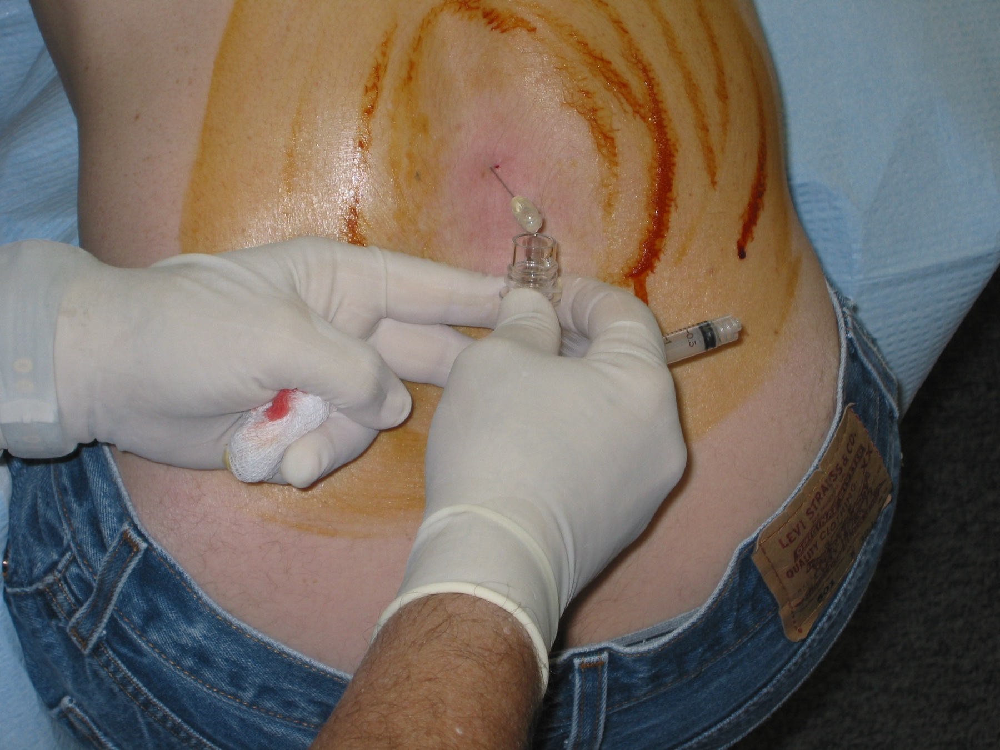

Liquor: 4–40 e a dissociação
4–40 — células até 4 · proteína até 40 no normal; no GBS a proteína sobe e as células ficam baixas.
Fixar a âncora 4–40, a dissociação proteico-citológica e o valor de prova do LCR no GBS.
4–40
Âncora: "4–40" — células até 4/mm³ · proteína até 40 mg/dL no normal. No GBS a proteína sobe e as células ficam baixas.
Dissociação proteico-citológica
A grande forma diagnóstica destacada é o líquor (LCR). Achado clássico: dissociação albumino-citológica = muita albumina/proteína no LCR com celularidade normal. Em prova, costuma aparecer como dissociação proteico-citológica.
| Parâmetro LCR | Normal (âncora) | No GBS (padrão ensinado) |
|---|---|---|
| Células | ≤ 4/mm³ (máx ~10 no raciocínio) | Normal / baixa |
| Proteína | ≤ 40 mg/dL | Elevada (ex.: 150) |
| Nome do achado | — | Dissociação proteico-citológica |
Na prática didática: normalmente até 4 células; no máximo se aceita chegar perto de 10 células no raciocínio de "ainda celular baixo". No GBS, a proteína está elevada com células normais/baixas.
Não é patognomônica — mas na prova fecha
A dissociação não é patognomônica de Guillain-Barré, mas na prova, se o quadro clínico bater e houver esse LCR, o diagnóstico é Guillain-Barré.
Por que importa na prática: LCR com muitas células joga o diagnóstico para fora do GBS clássico (Lyme, HIV, sarcoidose…).
Resumo operacional: clínica de GBS + proteína ↑ + células ≤4 (~10) = dissociação que a prova aceita.

Lumbar puncture with clear CSF collection. Photo by Brainhell, via Wikimedia Commons. Licensed under CC BY-SA 3.0. Source: https://commons.wikimedia.org/wiki/File:Wikipedian_getting_a_lumbar_puncture_(2006).jpg
O gesto que revela o diagnóstico
A punção lombar colhe o líquor que vai mostrar proteína alta com células normais. Não é um exame sofisticado — é uma agulha no espaço subaracnóideo lombar. O que sai dali, quando mostra 1 célula e 150 de proteína, fecha a hipótese que a clínica já tinha aberto.
O que fazer depois de fechar o diagnóstico — IVIG ou plasma, e o que nunca fazer.
Quiz
Q1. A âncora "4–40" refere-se a:
Q2. Dissociação proteico-citológica significa:
Q3. Células no LCR acima de ~10/mm³ no raciocínio de GBS: